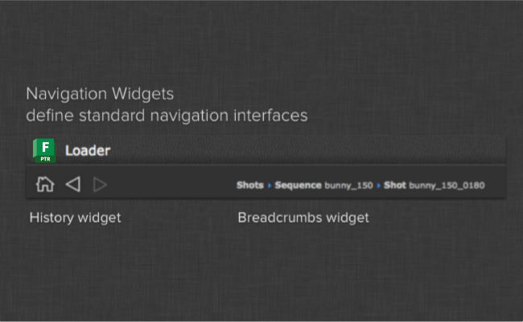

Navigation Widgets¶
The navigation module contains standard widgets that can be used to track navigation and state.
The breadcrumbs widget is a standard widget that displays a history
of things separated by arrows. This class utilizes the ElidedLabel widget
to ensure that names are reduced down nicely in the case there ins’t enough
space to display the entire history.
The navigation widget implements the standard home/next/prev concept that can be found in several Toolkit apps.
Breadcrumbs¶
-
class
navigation.BreadcrumbWidget(parent=None)[source]¶ Bases:
PySide.QtGui.QWidgetImplementation of the BreadcrumbWidget class
Parameters: parent ( QWidget) – The parent QWidget for this control-
set(breadcrumbs)[source]¶ Populate the breadcrumb control with a list of breadcrumbs
Parameters: breadcrumbs (list of Breadcrumb) – A list of breadcrumbs. Each breadcrumb instance should derive from the Breadcrumb class
-
Home/Next/Prev Navigation¶
-
class
navigation.NavigationWidget(parent=None)[source]¶ Bases:
PySide.QtGui.QWidgetNavigation widget containing previous, home and next buttons: [H][<][>]. The widget keeps track of the current location within a list and emits signals whenever the user navigates via one of the buttons.
Signal home_clicked: Emitted when someone clicks the home button Signal navigate(bj): Emitted when someone clicks the next or prev buttons. A navigation object is passed with the signal. Parameters: parent ( QWidget) – The parent QWidget